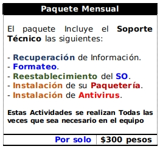
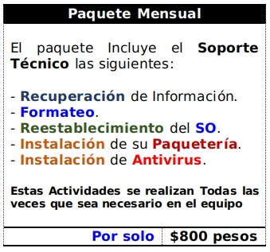

Descripcion
El Soporte Tecnico, es el Servicio que se ofrece en su Hogar, Oficina o Negocio a su Equipo de Computo, Impresoras, Servidores, Celulares, Tabletas y Sistemas que operan para la realizacion de sus actividades o giro.
En resumen el Servicio de Soporte Técnico lo podemos clasificar en tres grandes grupos. Soporte a Sistemas Informáticos, Infraestructura Informatica y Dispositivos Perifericos.
Reparacion a Equipo de Computo en Software
La Reparacion a Equipo de Computo se refiere el Mantenimiento Correctivo y Preventivo que es impotante realizar a todos los dispositivos electrónicos y mecanicos para su buen funcionamiento a lo largo del tiempo de vida (tanto operacional como fiscal).
El mantenimiento Correctivo a sus Computadoras incluye:
El mantenimiento Preventivo a sus Computadoras en Software contempla:
Reparacion a Equipo de Computo en Hardware
La Reparacion a Equipo de Computo en Hardware se considera cuando por una falla mecánica deja de funcionar.
El mantenimiento Correctivo en Hardware a sus Computadoras incluye:
El mantenimiento Preventivo a sus Computadoras en Hardware contempla:
Reparacion de Impresoras
Al igual que un equipo de Computo, las Impresoras requieren un Mantenimiento Preventivo y Correctivo. En muchas ocasiones cuando no se les da un Mantenimiento preventivo dejan de funcionar y en los peores casos ciertos componentes provocan el daño de otros. Siendo asi que su reparacion sea mas costosa.
Mantenimiento Correctivo
Las Impresoras de Chorro de Tinta tienen el defecto que con el uso normal, las particulas de tinta provocan obstruccion en los canales de inyeccion, esto se puede prevenir con un buen mantenimiento preventivo en Hardware. Una vez que se han obstruido los canales de inyeccion, el 50% de ellas logran reestablecerse correctamente, pero el otro 50% se vera forzado a reemplazar la pieza por una nueva.
Mantenimiento Preventivo
El Mantenimiento Preventivo se aplica solo en aquellas partes o componentes de constante uso, para evitar el fallo de otros componentes. Cuando la pieza ya no es reparable por el desgaste o mal uso, es necesario reemplazarla por una nueva.
Reparacion a Celulares y Tabletas
Mantenimiento Correctivo
Los Dispositivos Celulares y Tabletas hoy en dia son mas diseñados al uso cotidiano de los usuarios, por lo que ahora son mas resistentes (al agua, al polvo, a las caidas).
Sin embargo a pesar de ello, lo mas frecuente que provoca fallas en ellos es por descuido, provocando la ruptura de su Display que viene siendo el componente mas delicado. En segundo lugar se encuentra el Sistema de Carga, que es el de uso continuo.
Para ello contamos con proveedores que nos ofrecen un mejor precio que el mercado comun, con ello ofrecemos garantia de que su reparacion sera de Calidad.
Servicio a Casa Habitacion
Esquema Basico a Computadoras, Celulares y Tabletas.
Incluye los siguientes servicios por cada Dispositivo incluido en el Paquete.
Correctivo
Preventivo
El Paquete Basico por cada Dispositivo tiene un Costo Mensual de 300 pesos
El Paquete Empresarial por cada Dispositivo tiene un Costo Mensual de 800 pesos
Este paquete a diferencia del anterior Incluye el Reemplazo de Piezas y Componentes sin ningun costo adicional.
El Paquete Premium por cada Dispositivo tiene un Costo Mensual de 1500 pesos
Este paquete solamente aplica cuando adquiere su Infraestructura informatica con nosotros. Por ejemplo: si su negocio require infraestructura informatica que contempla 10 computadoras, su red de datos, 2 impresoras (color y blanco y negro), un Servidor. Tiene la posibilidad de entrar en el paquete Premium.
Por el dispositivo que incluya en el paquete, si por falla de fabrica o por el uso o desgaste, se reemplaza sin ningun costo.